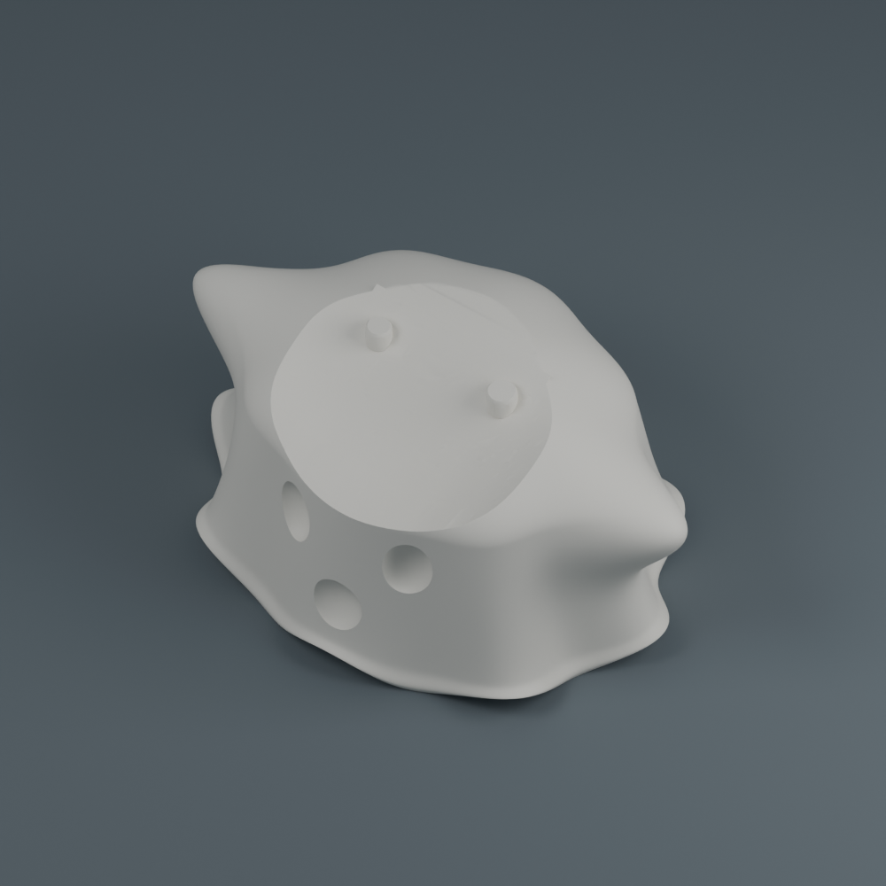
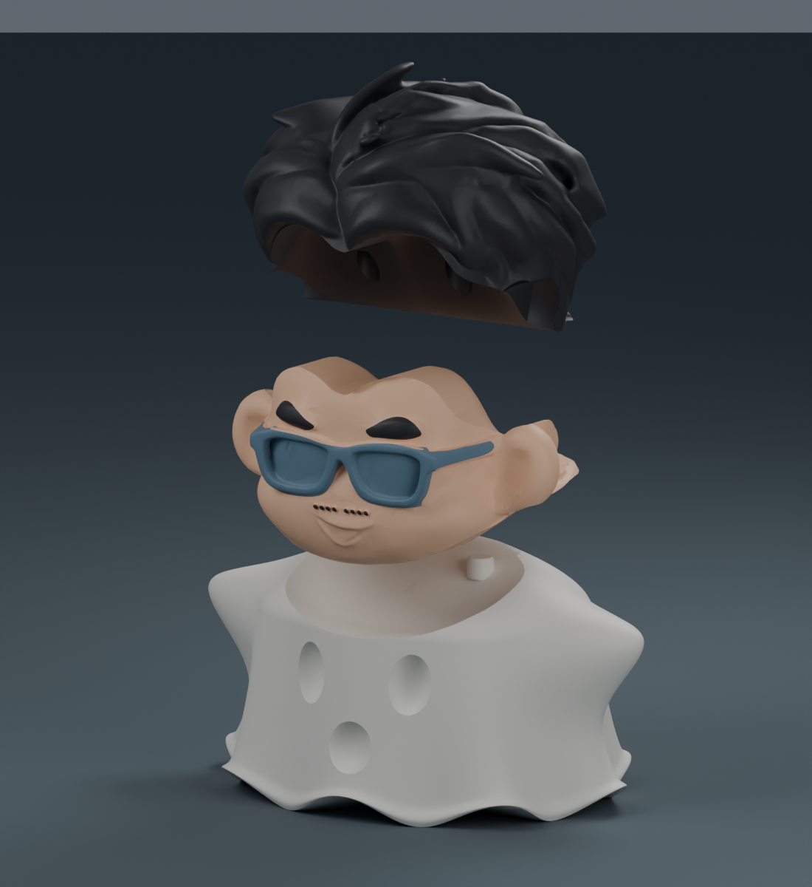
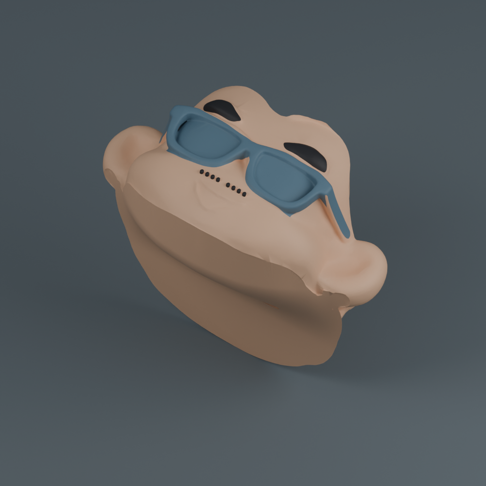
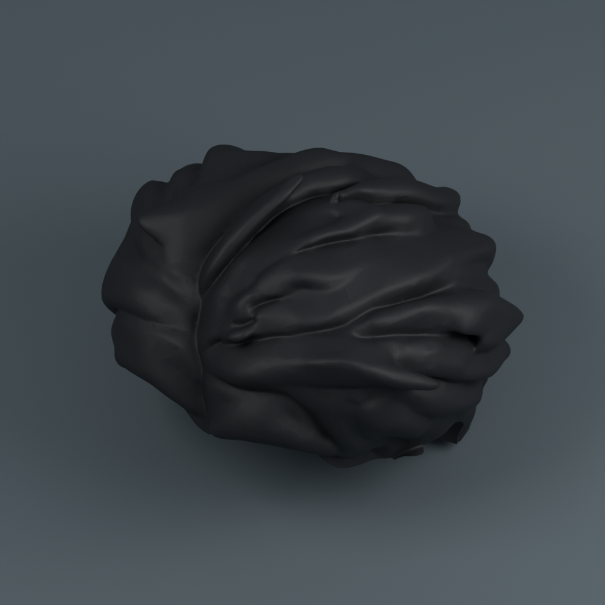

小陳晉 · HALLOWEEN EDITION
幽靈小陳晉，輕輕飄來。
自然垂墜皺褶、連續袖角與柔化的波浪下襬。熟悉的臉、眼鏡與髮型都保留，高約 10 公分，仍然只組裝三件。
白色幽靈膚色臉黑色頭髮與五官藍灰色眼鏡


已經有原色三件版？只換幽靈就好。
臉和頭髮使用相同模型與接點；已有的零件可沿用。只加印幽靈約 3 小時 18 分、48.88 g，沒有中途換色或擦料塔。實際接合仍請先試配。
三個零件，分三盤印
以「專案」開啟 3MF，保留列印方向。只有彩色臉盤需要三色列印與擦料塔，幽靈、頭髮各自單色。


整套約 13 小時 20 分 · 204.32 g
X1 Carbon／0.4 mm 噴嘴／PLA／0.16 mm 層高。含支撐、底邊、清料、擦料塔與起始流程；不含換盤、冷卻、清理與組裝。圖片未顯示列印輔助物，使用其他設備或耗材請重新切片。
配色與組裝
臉盤耗材 1＝膚色、2＝黑色、3＝藍灰色；三個材料區共同列印成一張臉，不用黏五官。列印時依顏色配對自己的線材。
- 冷卻取件，移除支撐及底邊，清乾淨榫孔和幽靈凹槽。
- 臉的孔對準幽靈的兩根榫，由上向下試裝。
- 頭髮的孔對準臉背面的兩根榫，由上向下試裝。
- 確認順暢後拆開，接點少量點膠，依相同順序固定。
孔徑比榫徑大 0.50 mm，單邊間隙 0.25 mm。尚未實體試印；有毛刺先輕磨，不要強壓。
檢查完成
三件皆為閉合實體，裝配無干涉，上下插拔路徑與三盤切片均通過。臉部材料配置保留，未傳送列印工作。
切片器保留床溫提示 1000C001，範例沿用 PLA／紋理 PEI 55°C，請依自己的設備及耗材設定處理。交付檔不含綁定 G-code。